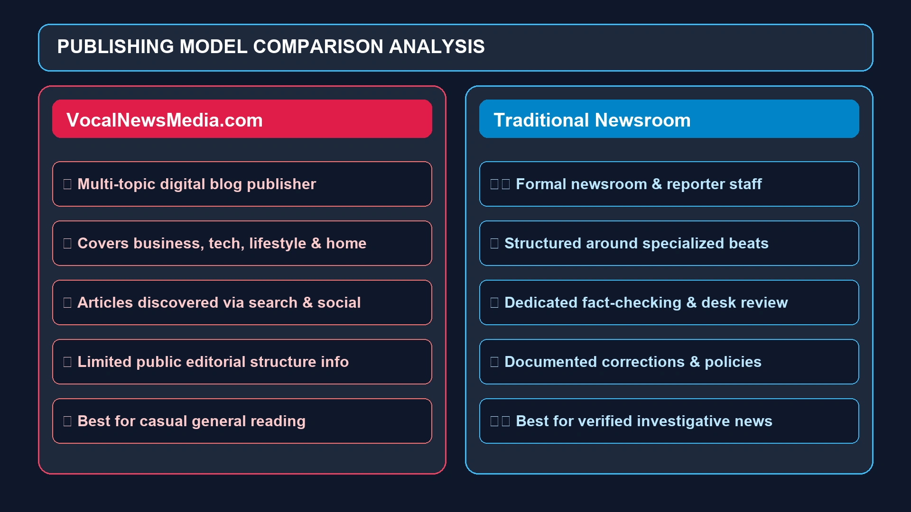

VocalNewsMedia Com: What It Is, What It Publishes, and How Reliable Is It?
If you have searched for vocalnewsmedia com, you are probably trying to figure out what kind of website it is, what you can find there, and whether its content is reliable enough to trust.
If you have searched for vocalnewsmedia com, you are probably trying to figure out what kind of website it is, what you can find there, and whether its content is reliable enough to trust.
The question is reasonable. There are thousands of websites competing for attention online, and the name of a site does not always tell you whether you are looking at a traditional news organization, an independent blog, a digital magazine, or a general publishing website.
VocalNewsMedia.com is an active online publishing website that currently presents a broad mix of news-style, informational, business, technology, lifestyle, and general-interest articles. Its homepage does not look like the website of a conventional newspaper focused on one geographic area or beat. Instead, its recent content covers a surprisingly wide range of subjects, from home services and business operations to technology, shipping, lifestyle, and other informational topics.
That distinction is important.
VocalNewsMedia can be useful for discovering information and reading general-interest articles, but readers should not automatically assume that every article has gone through the same editorial process as reporting from an established newspaper, wire service, or specialist publication.
This guide explains what VocalNewsMedia Com is, what type of content it publishes, how its website works, what its strengths and limitations are, and how to decide whether an article is reliable enough for the purpose you have in mind.
What Is VocalNewsMedia Com?
VocalNewsMedia Com refers to VocalNewsMedia.com, an online content and publishing website.
The website's current homepage identifies itself as Vocal News Media and features a blog-style publishing structure with a mixture of articles. Recent posts include topics related to lifestyle, home improvement, business, technology, shipping, workplace activities, and other general-interest subjects.
This broad editorial mix is one of the most noticeable characteristics of the site.
Rather than concentrating exclusively on politics, local reporting, technology, sports, or entertainment, VocalNewsMedia covers multiple categories. That makes it closer to a general-interest digital publishing platform than a specialist publication.
For a casual reader, this can be convenient. You can find different types of articles without visiting several niche websites.
For someone looking for authoritative reporting, however, the broader topic range means you should evaluate individual articles on their own merits.
What Does VocalNewsMedia.com Publish?
A look at the current website shows that its content is not limited to traditional breaking news.
Recent homepage articles include subjects such as:
- Lifestyle and consumer topics
- Home improvement
- Business
- Technology
- Workplace and team-building ideas
- Customer-service software
- Shipping and logistics
- Digital platforms
- Health and wellness
- General informational guides
For example, the homepage currently features articles about professional waxing kits, hot-water-heater replacement, team-building activities in Singapore, customer-service knowledge bases, and shipping to Bulgaria.
That tells us something useful about the site's publishing model.
It is not simply a place for breaking political or local news. It is a multi-topic content website designed to publish information across a variety of subjects.
Is VocalNewsMedia a Traditional News Website?
Not in the conventional sense.
A traditional news organization usually has recognizable editorial departments, reporters, specialist beats, newsroom processes, corrections policies, and a clearly identifiable editorial structure.
VocalNewsMedia's current website instead presents a broad blog-style collection of articles. The subjects change substantially from one post to another.
That does not automatically make the site unreliable.
It simply means readers should understand what type of publication they are using.
There is a big difference between:
"This website publishes information about current and interesting topics."
and:
"This is a fully staffed investigative newsroom with specialist reporters."
The available public evidence supports the first description much more comfortably than the second.
Why Do People Search for VocalNewsMedia Com?
The search query vocalnewsmedia com can have several different types of intent.
1. Navigational Search
Someone may have seen the website somewhere and simply wants to find it again.
Instead of entering the full URL, they type the domain name into Google.
2. Trust and Safety Research
A person may have encountered an article from VocalNewsMedia on social media or in search results and want to know whether the website is legitimate.
3. Content Research
Someone may be researching a specific article, company, product, or topic that appeared on the site.
4. General Curiosity
Users sometimes search unfamiliar domains simply because they want to understand what the website does.
This means a useful article targeting vocalnewsmedia com should answer more than "What is this website?"
It should also address content type, credibility, safety, editorial transparency, and appropriate use.
How Does VocalNewsMedia.com Work?
From a reader's perspective, the website follows a familiar publishing model.
A typical journey looks like this:
Search or social media → VocalNewsMedia article → Read the information → Follow relevant links or continue browsing
The website organizes published material as blog posts, allowing readers to access individual articles through search engines or direct navigation.
The current homepage also includes a search field and a blog-oriented content structure.
This is a relatively simple model, but it fits the way many people consume information today.
Instead of visiting a homepage first, readers often discover individual articles through Google, social networks, referrals, or links shared by other websites.
VocalNewsMedia Com Content Categories
Because the website covers many subjects, it can be useful to understand the major types of content you may encounter.
Technology
Technology articles can cover software, websites, digital tools, artificial intelligence, online platforms, and other technology-related subjects.
This category can be useful for readers who want introductory explanations without reading highly technical documentation.
However, for software specifications or technical implementation, the official product documentation should normally remain the primary source.
Business
Business content can address companies, workplace practices, customer service, productivity, marketing, and business technology.
This can be helpful for general ideas and awareness, although financial or corporate claims should be checked against primary sources.
Lifestyle
Lifestyle is naturally broad.
Articles may cover everyday activities, consumer decisions, travel, wellness, home-related subjects, and other interests.
This is one reason the website can appeal to casual readers who are not visiting specifically for hard news.
Home and Consumer Topics
The current site includes practical subjects related to homeowners and consumers. Its homepage, for example, currently features content discussing water-heater replacement and professional waxing kits.
These articles can answer common questions, but readers should still verify recommendations involving significant spending, safety, or professional services.
Health and Wellness
Health-related information requires a higher standard of verification.
A general-interest article can be a useful introduction to a subject, but it should not replace advice from qualified medical professionals or authoritative health organizations.
Travel and International Topics
The site also publishes information that can relate to travel, shipping, and international activities.
These subjects can change quickly because rules, prices, schedules, and requirements are frequently updated.
Always check official sources for current requirements before making travel or logistical decisions.
Is VocalNewsMedia Com Legit?
The answer depends on what you mean by "legit."
If the question is:
"Is VocalNewsMedia.com a real, functioning website?"
Yes. The domain is live and actively publishing content. Its homepage currently displays dated articles and a functioning publishing structure.
But if the question is:
"Does every article on VocalNewsMedia have the same editorial verification as a major established news organization?"
There is not enough public evidence to make that claim.
A recent independent review similarly concluded that the website is functional but that publicly available information about its ownership, editorial oversight, and fact-checking process is limited.
That distinction is extremely important.
A website can be real without being an authoritative source for every subject it covers.
How Reliable Is VocalNewsMedia?
Reliability should be evaluated article by article rather than assigned to the entire domain with one simple label.
For example, suppose an article explains a general concept such as:
"What is a customer-service knowledge base?"
You can compare the explanation with documentation from established software providers or industry sources.
But if an article makes a claim about:
- A medical treatment
- A financial product
- A legal requirement
- Breaking news
- Government policy
- A scientific discovery
- A product safety issue
you should seek confirmation from authoritative primary sources.
The current website covers many unrelated subjects, which makes this approach especially important.
Does VocalNewsMedia Have a Newsroom?
There is limited publicly verifiable information available about a conventional newsroom structure.
This is one of the areas where readers should avoid filling gaps with assumptions.
A website publishing news-style articles does not necessarily have:
- Staff reporters
- Editors
- Dedicated beat reporters
- A fact-checking department
- A public corrections desk
- A formal newsroom
If those details are not clearly documented, readers should not assume they exist.
That does not make the content automatically false. It simply means the reader should place more emphasis on the evidence contained within individual articles.

What Should You Check Before Trusting a VocalNewsMedia Article?
A quick credibility check can tell you a lot.
Check the Author
Is the author clearly identified?
Can you find information about their expertise?
Does the author regularly write about the subject?
An identifiable author with relevant experience is generally a more useful signal than an anonymous article.
Check the Publication Date
This matters enormously for subjects that change quickly.
A technology guide from two years ago may describe an interface that no longer exists.
A travel article may contain outdated requirements.
A financial article may reference old prices or regulations.
Always check the date.
Look for Sources
Good informational writing should make it possible to understand where important claims came from.
Look for:
- Official statements
- Government sources
- Research papers
- Company documentation
- Expert interviews
- Original data
- Reputable publications
If a major claim has no supporting evidence, investigate it yourself.
Compare With Primary Sources
This is perhaps the most useful habit.
If an article discusses a product, visit the manufacturer's website.
If it discusses government rules, visit the government website.
If it discusses scientific research, locate the original paper.
If it discusses financial information, look for official filings or regulatory sources.
The closer you can get to the original information, the better.
VocalNewsMedia Com and SEO
There is another reason the site may appear in Google results: search engine optimization.
Modern publishing websites often structure content around search intent.
Common SEO elements include:
- Descriptive titles
- H2 and H3 headings
- Keyword-focused topics
- Internal links
- Search-friendly URLs
- Regular publishing
- FAQ sections
- Short paragraphs
- Scannable formatting
These techniques can make content easier for search engines and users to understand.
But SEO visibility and editorial credibility are two different things.
A page ranking highly on Google is not automatically the most authoritative source on the subject.
Likewise, a website with strong editorial standards may not rank first for every search.
This distinction is important when evaluating VocalNewsMedia or any other online publisher.
Why Does VocalNewsMedia Cover So Many Topics?
The multi-topic model has both advantages and disadvantages.
A general-interest website can reach a broader audience because it is not restricted to one subject.
One visitor may arrive looking for a business article.
Another may be interested in home improvement.
A third may discover a technology guide.
This gives the publisher more opportunities to attract search traffic across different topics.
The downside is that broad coverage makes it harder to demonstrate deep expertise in every category.
A website cannot realistically be expected to have specialist-level expertise in every subject it publishes.
VocalNewsMedia vs Traditional News Organizations
It helps to compare the publishing models rather than asking which website is universally "better."
| Factor | VocalNewsMedia.com | Traditional News Organization |
|---|---|---|
| Topic coverage | Broad | Often structured around beats |
| Publishing model | Digital publishing/blog style | Newsroom |
| Article discovery | Search, direct visits, social sharing | Search, direct, apps, print, social |
| Editorial transparency | Limited public information | Often more documented |
| Specialist reporters | Not clearly established | Common |
| Investigative reporting | Not its obvious focus | Often part of newsroom model |
| Best for | General-interest reading | Verified reporting and specialist coverage |
| Primary-source checking | Recommended | Still recommended |
The key takeaway is that VocalNewsMedia should not automatically be evaluated by the same standards or assumptions as a major newspaper.
What Are the Strengths of VocalNewsMedia Com?
There are several practical advantages to a broad digital publishing site.
Wide Range of Subjects
Readers can find content across multiple areas rather than being restricted to one niche.
Easy-to-Read Format
The blog-style structure makes individual articles straightforward to browse.
Free Public Access
The site is accessible through a normal web browser without requiring readers to maintain a newspaper subscription simply to view its public articles.
Search-Friendly Content
The site's articles are designed to be discoverable through web search, making it possible for users to find information about specific topics.
Convenient General Reading
For casual reading, a broad content library can be convenient.
What Are the Limitations?
The limitations are equally important.
Limited Editorial Transparency
Public information about the ownership structure, editorial team, and fact-checking process is not particularly extensive.
Broad Topic Coverage
Covering many unrelated subjects makes deep specialization difficult.
Not a Replacement for Primary Sources
Important claims should be verified elsewhere.
News-Style Content Can Create Confusion
The site's name contains "News Media," but its current homepage includes a mixture of general informational articles rather than only conventional news reporting.
Information Can Become Outdated
Any website covering technology, business, travel, health, or consumer topics needs regular updating.
Readers should check whether an article is current before acting on it.
Is VocalNewsMedia Safe to Visit?
There is a difference between website safety and content reliability.
A site can be technically safe to browse while still not being the best source for important information.
Conversely, a highly respected publication can still contain an occasional incorrect article.
A recent third-party technical assessment reported that VocalNewsMedia.com had a desktop PageSpeed score of 91 and mobile score of 74 in its July 2026 test, although such performance metrics should not be confused with editorial trustworthiness.
For ordinary browsing, users should still follow standard web-safety practices:
- Keep your browser updated.
- Avoid downloading unknown files.
- Don't enter sensitive credentials unnecessarily.
- Check the domain before entering personal information.
- Be cautious with unexpected redirects or pop-ups.
- Use reputable security software.
Should You Trust VocalNewsMedia for Important Decisions?
For high-stakes decisions, no single general-interest website should be your only source.
Medical Decisions
Use qualified medical professionals and authoritative health organizations.
Financial Decisions
Check regulatory sources, financial institutions, company filings, and qualified professionals.
Legal Questions
Use official government resources and qualified legal professionals.
Travel Requirements
Check government immigration, airline, and destination-country sources.
Breaking News
Compare multiple established news organizations and seek original statements.
This approach is not specific to VocalNewsMedia.
It is simply good information hygiene.
How to Evaluate an Article on VocalNewsMedia
Here is a simple five-question test.
1. Who wrote it?
Is there an identifiable author?
2. What evidence is provided?
Are important claims supported?
3. How recent is it?
Does the publication date match the subject?
4. What is the original source?
Can you trace the information back to where it originated?
5. Do other reliable sources agree?
If several independent authoritative sources support the same claim, confidence increases.
This takes only a few minutes but can dramatically improve the quality of information you consume.
Is VocalNewsMedia the Same as Vocal Media?
No.
This is an important distinction because the names can easily cause confusion.
VocalNewsMedia.com and Vocal Media are separate names and should not be treated as the same platform simply because both use the word "Vocal."
Vocal Media is a creator-publishing platform associated with writers and storytelling, while VocalNewsMedia.com is a separate website with its own domain and publishing model.
If you are researching a particular service, always check the exact domain rather than relying on a similar brand name.
Is VocalNewsMedia the Same as Vokal or Local Vocal?
No.
There are multiple digital products and services with similar names.
For that reason, searches for "Vocal," "Vokal," "Local Vocal," and "VocalNewsMedia" can sometimes produce unrelated results.
The domain vocalnewsmedia.com is the most reliable identifier when your intention is specifically to research VocalNewsMedia.
Who Is VocalNewsMedia.com For?
The website may appeal to several types of readers.
Casual Readers
People who enjoy browsing different subjects can benefit from the broad range of content.
Technology Readers
Visitors interested in digital tools and technology-related topics may find introductory material.
Business Readers
Business and workplace articles can provide ideas and general information.
Homeowners and Consumers
Practical consumer and home-related articles can be useful for initial research.
People Discovering New Topics
A general-interest site can be a convenient starting point when you want a quick introduction to an unfamiliar subject.
It is less suitable as the sole source for specialized academic research, professional decisions, or high-stakes claims.
How VocalNewsMedia Fits Into Modern Digital Publishing
The rise of websites like VocalNewsMedia reflects a broader change in how information is produced and consumed.
Traditional media once controlled much of the distribution process.
Today, a website can publish an article and make it available to readers around the world almost immediately.
That has obvious benefits.
More people can publish.
More topics can receive attention.
Readers have more choices.
But there is also a downside.
The number of publishers has grown much faster than the average reader's ability to evaluate them.
That makes digital literacy increasingly important.
The future of online information will not simply be about finding more articles.
It will be about identifying which information deserves confidence.
Frequently Asked Questions About VocalNewsMedia Com
VocalNewsMedia Com refers to VocalNewsMedia.com, an active online publishing website that currently features a broad range of news-style and informational articles covering technology, business, lifestyle, home, consumer, and other general-interest subjects.
Yes. VocalNewsMedia.com is a functioning website with an active publishing archive and current articles. Its homepage was recently accessible and showed content dated in 2026.
It does not appear to operate like a conventional newspaper with a clearly documented newsroom structure. Its current content is broad and blog-oriented, covering many unrelated subjects.
Trust should be evaluated on an article-by-article basis. Publicly available information about its ownership, editorial oversight, and fact-checking process is limited, so important claims should be independently verified.
The website publishes news-style and informational content, but its current homepage contains many general-interest articles rather than exclusively traditional news reporting.
It can be used for initial research and topic discovery. For academic, medical, legal, financial, or professional research, use authoritative primary sources and established specialist publications as well.
There is limited publicly verifiable information establishing the size or structure of a conventional editorial team. Readers should not assume that all articles have undergone the same editorial process used by major news organizations.
The website is publicly accessible and functioning. However, technical safety and editorial credibility are separate questions. Use normal web-security precautions and avoid entering sensitive information unnecessarily.
No publisher should automatically be assumed to be completely unbiased. Readers should examine sources, evidence, wording, author information, and competing accounts before forming conclusions about important issues.
The site is actively publishing, with its homepage displaying multiple recent articles. The publishing cadence can change over time.
For casual information, it may be a useful reference. For academic or professional work, it is better to cite primary documents, peer-reviewed research, government sources, official company documentation, or established publications where available.
Final Verdict: What Is VocalNewsMedia Com?
VocalNewsMedia Com is an active, broad-topic digital publishing website rather than a clearly documented traditional newsroom.
Its current homepage shows a wide mixture of articles covering business, technology, lifestyle, home services, consumer topics, travel-related subjects, and other general-interest areas.
That makes the website potentially useful for casual reading, topic discovery, and general information.
But the most important takeaway is about expectations.
Don't assume that a website with "News Media" in its name automatically operates like Reuters, the Associated Press, BBC News, The New York Times, or another established newsroom.
And don't assume that an article ranking in Google is automatically authoritative.
If a VocalNewsMedia article makes an important claim, follow the evidence. Check the author. Look at the date. Find the original source. Compare the information with independent, authoritative publications.
That approach gives you the best of both worlds: you can use the convenience of modern digital publishing without giving up the skepticism required to navigate today's crowded information environment.
In short, VocalNewsMedia.com can be explored as a general-interest online publishing platform, but readers should use independent verification whenever accuracy genuinely matters.
Enjoyed this Technology guide?
Explore more Tech articles or submit your own guest contribution on CracksTube.